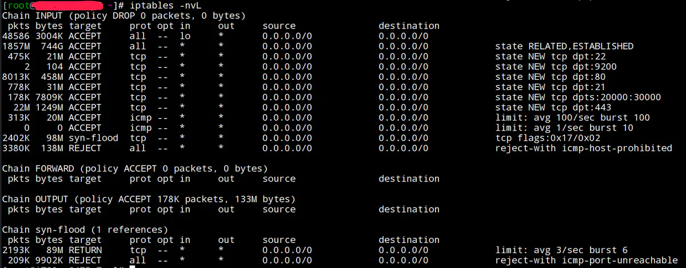
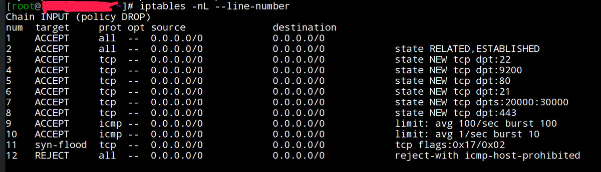

iptables防火墙简单应用
iptables默认情况下开通22（ssh）、80（http）、443（https）21、20000—30000（ftp）端口
iptables默认端口及查看方法
查看规则命令
iptables -nvL

参数说明 -L, --list [chain]：列出规则，（注：L大写） -v, --verbose：详细信息 -n, --numeric：数字格式显示主机地址和端口号
添加新规则
#添加规则允许9200端口
iptables -I INPUT 4 -p tcp -m state --state NEW -m tcp --dport 9200 -j ACCEPT
#保存规则
service iptables save
#命令格式
iptables [-AI chain] [-io interface] [-p tcp,udp] [-s 来源 IP] [--sport 端口范围] [-d 目标 IP] [--dport 端口范围] -j [ACCEPT,DROP,REJECT]
#参数说明
#-A：针对某个规则链添加一条规则，新添加的规则排在现有规则的后面。
#-I：针对某个规则链插入一条规则，可以为新插入的规则指定在链中的序号。如果不指定序号，则新的规则会变成第一条规则。
#[INPUT,OUTPUT,FORWARD] 入、出、转发
#-p: 指定此规则适用于那种网络协议(常用的协议有 tcp、udp、icmp，all 指适用于所有的协议)。
#--sport：限制来源的端口号，可以是单个端口，也可以是一个范围，如 1024:1050
#--dport：限制目标的端口号。
#-m：指定 iptables 的插件模块，常见的模块有：
# state：状态模块
# mac：处理网卡硬件地址(hardware address)的模块
#--state：指定数据包的状态，常见的状态有：
# INVALID：无效的数据包状态
# ESTABLISHED：已经连接成功的数据包状态
# NEW：想要新建立连接的数据包状态
# RELATED：这个最常用，它表示该数据包与我们主机发送出去的数据包有关
#-j：指定匹配成功后的行为，主要有 ACCEPT（通）、DROP（堵，不回应）、REJECT（堵，回应）。
#[ACCEPT,DROP,REJECT]
# ACCEPT 一旦包满足了指定的匹配条件，就会被允许
# DROP 如果包符合条件，这个 target 就会把它丢掉，
# REJECT REJECT 和 DROP 基本一样，区别在于它除了阻塞包之外，还向发送者返回错误信息。
删除规则
#显示规则行号
iptables -nL --line-number
#删除规则
iptables -D INPUT 1
